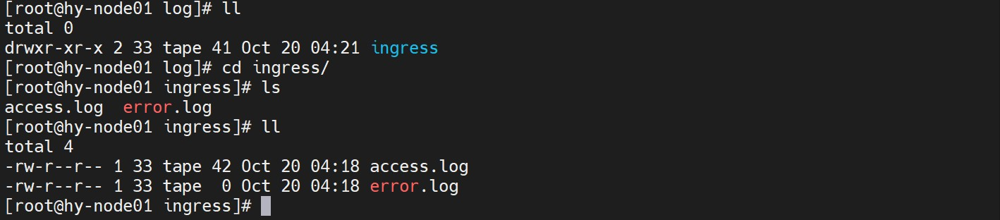

前不久线上的集群
ingress的一个pod发生了驱逐：1
2
3
4
5
6
7
8
9[root@hy-master01 sjl]# check
NAMESPACE NAME READY STATUS RESTARTS AGE
ingress-nginx nginx-ingress-controller-6dc776b7bc-nvv8f 0/1 Evicted 0 20d
ingress-nginx nginx-ingress-controller-6dc776b7bc-sc6t6 0/1 Evicted 0 20d
ingress-nginx nginx-ingress-controller-6dc776b7bc-w85h9 0/1 Evicted 0 20d
ingress-nginx nginx-ingress-controller-6dc776b7bc-z9djf 0/1 Evicted 0 20d
ops delete-es-index-1634490000-szq5h 0/1 Completed 0 2d8h
ops delete-es-index-1634576400-td5qc 0/1 Completed 0 32h
ops delete-es-index-1634662800-nfj9j 0/1 Completed 0 8
查看原因的时候，显示驱逐原因是
DiskPressure：1
2
3
4
5
6
7
8
9
10
11
12
13
14
15
16
17
18[root@hy-master01 sjl]# kubectl describe pod -n ingress-nginx nginx-ingress-controller-6dc776b7bc-sc6t6
Name: nginx-ingress-controller-6dc776b7bc-sc6t6
Namespace: ingress-nginx
Priority: 0
Node: hy-node02.xcmg.com/
Start Time: Wed, 29 Sep 2021 14:19:15 +0800
Labels: app.kubernetes.io/name=ingress-nginx
app.kubernetes.io/part-of=ingress-nginx
pod-template-hash=6dc776b7bc
Annotations: kubernetes.customized/logging_emptydir_name: logdir
prometheus.io/port: 10254
prometheus.io/scrape: true
Status: Failed
Reason: Evicted
Message: Pod The node had condition: [DiskPressure].
IP:
IPs: <none>
Controlled By: ReplicaSet/nginx-ingress-controller-6dc776b7bc经过排查原因是
nginx的日志没有做任何处理，结果越攒越多，将磁盘给撑爆了。不要问我为啥没做处理，因为我接手就是这样，没人提，也没啥时间做排查。对于容器的日志，我们对docker做了限制，但为啥没有生效？1
2
3
4
5
6{
"insecure-registries":["xxxx","xxxx","xxxx","0.0.0.0/0"],
"bip": "172.17.0.1/16",
"exec-opts": ["native.cgroupdriver=systemd"],
"log-opts": { "max-size" : "100m", "max-file" : "3" }
}查看部署文件发现日志以
emptyDir的方式挂载出来了，那么我们就需要日志进行定时切割了：1
[root@hy-master01 ingress]# kubectl get deployments.apps -n ingress-nginx nginx-ingress-controller -o yaml > nginx-ingress-controller.yaml
思路
首先需要将日志以
hostPath的方式挂载到数据机的目录，修改资源清单：1
2
3
4
5volumes:
- name: logdir
hostPath:
path: /mnt/data/log/ingress
type: ""其次日志如何切割，可以选择脚本进行每日的定时任务处理，但我们还有
lograte工具可以选择，具体使用方式本篇不做介绍：logrotate是linux日志文件管理工具。用于分割日志文件，删除旧的日志文件，并创建新的日志文件，起到“转储”作用。
虽然生产环境中，
ingress会被固定调度到某些节点，但为了部署的简便和一致，我们考虑将logrorate作为sidecar部署到一起。当然在我们目前使用的环境中以
daemonset的方式在每个节点都部署了logrorate来切割集群产生的各类日志，这种方式比较简单，下面我们来实现sidecar的方式：1
2
3[root@hy-master01 ui]# kubectl get ds -n kube-system logrotate
NAME DESIRED CURRENT READY UP-TO-DATE AVAILABLE NODE SELECTOR AGE
logrotate 21 21 21 21 21 <none> 280d
实现
配置
logrorate：1
2
3
4
5
6
7
8
9
10[root@hy-master01 ingress]# cat <<EOF >nginx.log
/mnt/data/log/ingress/access.log {
rotate 7
daily
maxsize 50M
copytruncate
missingok
create 0644 root root
}
EOFnginx-ingress-controller默认以33这个用户登录启动容器的，因此hostPath路径时存在权限问题。需要手动在机器上执行chown -R 33:33 /data/log/nginx_ingress_controller。为了实现自动化，我们在部署中增加一个init容器来自动执行，init容器执行的脚本，在脚本我们增加了一些内核参数的优化：1
2
3
4
5
6
7
8
9
10
11
12!/bin/bash
mount -o remount rw /proc/sys
sysctl -w net.core.somaxconn=65535
sysctl -w net.ipv4.ip_local_port_range="1024 65535"
sysctl -w fs.file-max=1048576
sysctl -w fs.inotify.max_user_instances=16384
sysctl -w fs.inotify.max_user_watches=524288
sysctl -w fs.inotify.max_queued_events=16384
logdir=$LOG_DIR
userID=$USER_ID
echo "set dir: $logdir 's group as $userID"
chown -R $userID:$userID $logdir现在我们就可以创建出部署的资源清单：
首先将脚本作为
init容器的configmap：1
2
3
4
5
6
7
8
9
10
11
12
13
14
15
16
17
18
19
20
21
22
23[root@hy-master01 ingress]# kubectl create cm set-logdir -n ingress-nginx --from-file=./set_logdir.sh --dry-run -o yaml > init-set-logdir-cm.yaml
[root@hy-master01 ingress]# cat init-set-logdir-cm.yaml
apiVersion: v1
data:
set_logdir.sh: |
#!/bin/bash
mount -o remount rw /proc/sys
sysctl -w net.core.somaxconn=65535
sysctl -w net.ipv4.ip_local_port_range="1024 65535"
sysctl -w fs.file-max=1048576
sysctl -w fs.inotify.max_user_instances=16384
sysctl -w fs.inotify.max_user_watches=524288
sysctl -w fs.inotify.max_queued_events=16384
logdir=$LOG_DIR
userID=$USER_ID
echo "set dir: $logdir 's group as $userID"
chown -R $userID:$userID $logdir
kind: ConfigMap
metadata:
creationTimestamp: null
name: set-logdir
namespace: ingress-nginx将
logrorate的配置作为sidecar容器的configmap：1
2
3
4
5
6
7
8
9
10
11
12
13
14
15
16
17
18
19
20
21
22
23
24
25
26
27[root@hy-master01 ingress]# kubectl create cm logrorate-conf -n ingress-nginx --from-file=./nginx.log --dry-run -o yaml > logrorate-conf-cm.yaml
[root@hy-master01 ingress]# cat logrorate-conf-cm.yaml
apiVersion: v1
data:
nginx.log: |
/mnt/data/log/ingress/access.log {
rotate 7
daily
maxsize 50M
copytruncate
missingok
create 0644 www-data root
}
/mnt/data/log/ingress//error.log {
rotate 7
daily
maxsize 50M
copytruncate
missingok
create 0644 root root
}
kind: ConfigMap
metadata:
creationTimestamp: null
name: logrorate-conf
namespace: ingress-nginx其余保持不变，下面就是一份部署的清单：
1
2
3
4
5
6
7
8
9
10
11
12
13
14
15
16
17
18
19
20
21
22
23
24
25
26
27
28
29
30
31
32
33
34
35
36
37
38
39
40
41
42
43
44
45
46
47
48
49
50
51
52
53
54
55
56
57
58
59
60
61
62
63
64
65
66
67
68
69
70
71
72
73
74
75
76
77
78
79
80
81
82
83
84
85
86
87
88
89
90
91
92
93
94
95
96
97
98
99
100
101
102
103
104
105
106
107
108
109
110
111
112
113
114
115
116
117
118
119
120
121
122
123
124
125
126
127
128
129
130
131
132
133
134
135
136
137
138
139
140
141
142
143
144
145
146
147
148
149
150
151
152
153
154
155
156
157
158
159
160
161
162
163
164
165
166
167
168
169
170
171
172
173
174
175
176
177
178
179
180
181
182
183
184
185
186
187
188
189
190
191
192
193
194
195
196
197
198
199
200
201
202
203
204
205
206
207
208
209
210
211
212
apiVersion: apps/v1
kind: Deployment
metadata:
annotations:
deployment.kubernetes.io/revision: "1"
labels:
app.kubernetes.io/name: ingress-nginx
app.kubernetes.io/part-of: ingress-nginx
name: nginx-ingress-controller
namespace: ingress-nginx
spec:
progressDeadlineSeconds: 600
replicas: 1
revisionHistoryLimit: 10
selector:
matchLabels:
app.kubernetes.io/name: ingress-nginx
app.kubernetes.io/part-of: ingress-nginx
strategy:
rollingUpdate:
maxSurge: 25%
maxUnavailable: 25%
type: RollingUpdate
template:
metadata:
annotations:
kubernetes.customized/logging_emptydir_name: logdir
prometheus.io/port: "10254"
prometheus.io/scrape: "true"
labels:
app.kubernetes.io/name: ingress-nginx
app.kubernetes.io/part-of: ingress-nginx
spec:
# 增加一个init容器
initContainers:
- name: init-sys
image: centos:centos7.9.2009
imagePullPolicy: IfNotPresent
env:
- name: LOG_DIR
value: /var/log/nginx
- name: USER_ID
value: "33"
command:
- "/bin/sh"
- "-c"
- "/root/set_logdir.sh"
volumeMounts:
- name: scripts
mountPath: /root
- name: logdir
mountPath: /var/log/nginx
containers:
# sidecar容器
- name: logrorate
image: blacklabelops/logrotate:1.3
imagePullPolicy: IfNotPresent
env:
- name: "LOGROTATE_CRONSCHEDULE"
value: "* 1 * * * *"
resources:
requests:
cpu: 100m
memory: 200Mi
limits:
cpu: 200m
memory: 500Mi
volumeMounts:
- name: logdir
mountPath: /var/log/nginx
- name: logrotateconf
mountPath: /etc/logrotate.d/nginx.log
subPath: nginx.log
- args:
- /nginx-ingress-controller
- --configmap=$(POD_NAMESPACE)/nginx-configuration
- --tcp-services-configmap=$(POD_NAMESPACE)/tcp-services
- --annotations-prefix=nginx.ingress.kubernetes.io
- --enable-dynamic-certificates=false
- --cluster-balancer=true
env:
- name: POD_NAME
valueFrom:
fieldRef:
apiVersion: v1
fieldPath: metadata.name
- name: POD_NAMESPACE
valueFrom:
fieldRef:
apiVersion: v1
fieldPath: metadata.namespace
image: nginx-ingress-controller:0.26.0
imagePullPolicy: IfNotPresent
resources:
requests:
cpu: 2
memory: 4Gi
limits:
cpu: 4
memory: 8Gi
livenessProbe:
failureThreshold: 3
httpGet:
path: /healthz
port: 10254
scheme: HTTP
initialDelaySeconds: 10
periodSeconds: 10
successThreshold: 1
timeoutSeconds: 10
name: nginx-ingress-controller
ports:
- containerPort: 80
hostPort: 80
name: http
protocol: TCP
- containerPort: 443
hostPort: 443
name: https
protocol: TCP
readinessProbe:
failureThreshold: 3
httpGet:
path: /healthz
port: 10254
scheme: HTTP
periodSeconds: 10
successThreshold: 1
timeoutSeconds: 10
securityContext:
allowPrivilegeEscalation: true
capabilities:
add:
- NET_BIND_SERVICE
drop:
- ALL
runAsUser: 33
terminationMessagePath: /dev/termination-log
terminationMessagePolicy: File
volumeMounts:
- mountPath: /var/log/nginx
name: logdir
dnsPolicy: ClusterFirst
hostNetwork: true
nodeSelector:
nodetype: loadbalance
restartPolicy: Always
schedulerName: default-scheduler
securityContext: {}
serviceAccount: nginx-ingress-serviceaccount
serviceAccountName: nginx-ingress-serviceaccount
terminationGracePeriodSeconds: 30
volumes:
- name: logdir
hostPath:
path: /mnt/data/log/ingress
- name: scripts
configMap:
name: set-logdir
defaultMode: 0700
- name: logrotateconf
configMap:
name: logrorate-conf
items:
- key: nginx.log
path: nginx.log
apiVersion: v1
data:
set_logdir.sh: |
#!/bin/bash
mount -o remount rw /proc/sys
sysctl -w net.core.somaxconn=65535
sysctl -w net.ipv4.ip_local_port_range="1024 65535"
sysctl -w fs.file-max=1048576
sysctl -w fs.inotify.max_user_instances=16384
sysctl -w fs.inotify.max_user_watches=524288
sysctl -w fs.inotify.max_queued_events=16384
logdir=$LOG_DIR
userID=$USER_ID
echo "set dir: $logdir 's group as $userID"
chown -R $userID:$userID $logdir
kind: ConfigMap
metadata:
name: set-logdir
namespace: ingress-nginx
---
apiVersion: v1
data:
nginx.log: |
/mnt/data/log/ingress/access.log {
rotate 7
daily
maxsize 50M
copytruncate
missingok
create 0644 www-data root
}
/mnt/data/log/ingress/error.log {
rotate 7
daily
maxsize 50M
copytruncate
missingok
create 0644 root root
}
kind: ConfigMap
metadata:
name: logrorate-conf
namespace: ingress-nginx
在测试环境验证
部署，下面就实现了部署，当然还有时区挂载设置，权限控制之类的，我们暂时不做处理：
1
2
3
4
5
6
7
8
9
10
11
12
13[root@hy-master01 ingress]# kubectl apply -f nginx-ingress-controller-logrotate.yaml deployment.apps/nginx-ingress-controller created
configmap/set-logdir created
configmap/logrorate-conf created
[root@hy-master01 ingress]# kubectl get pod -n ingress-nginx
NAME READY STATUS RESTARTS AGE
ingress-mgr-go-66b7bd7879-zjt5l 1/1 Running 2 57d
nginx-ingress-controller-868c7dc58d-d9z4c 0/2 PodInitializing 0 5s
[root@hy-master01 ingress]# kubectl get pod -n ingress-nginx -w
NAME READY STATUS RESTARTS AGE
ingress-mgr-go-66b7bd7879-zjt5l 1/1 Running 2 57d
nginx-ingress-controller-868c7dc58d-d9z4c 0/2 PodInitializing 0 31s
nginx-ingress-controller-868c7dc58d-d9z4c 1/2 Running 0 44s
nginx-ingress-controller-868c7dc58d-d9z4c 2/2 Running 0 53s如下图，我们就实现了日志切割功能：
